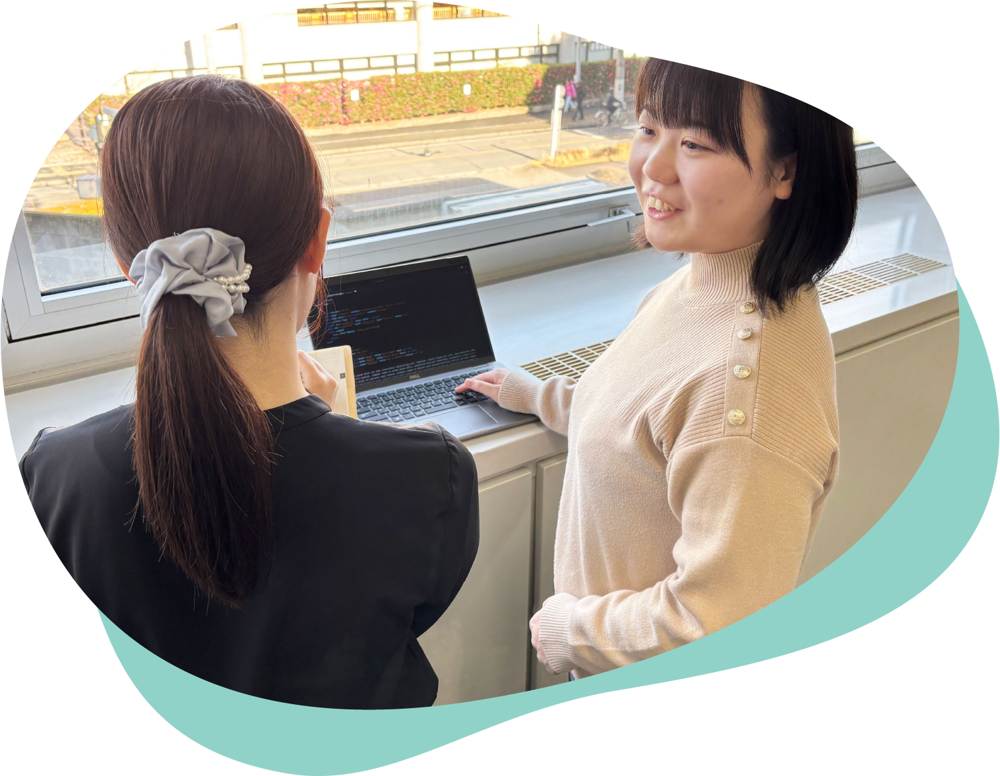

社会インフラの最前線で挑む、
「金融×IT」の
プロフェッショナル集団。
1973年の設立以来、中小企業専門金融機関・商工中金のバンキングシステムの設計・開発・運用を担ってきました。扱うのは、社会の経済活動を止められない基幹システム。効率化・多様化が加速する金融の現場で、私たちは常に新しい技術と課題に挑み続けています。
当社の特徴
「金融×IT」の二刀流——システムの視点と銀行業務の視点、両方を武器に課題を解く。片方だけでは辿り着けない答えを出せることが、私たちの強みであり、面白さです。
部門紹介

インフラ部門
銀行システムの土台を支える領域。オンプレミスからAWS・Azureへの大規模移行という、信頼性を落とせない難題に挑戦中。技術の最前線で、社会インフラを根っこから設計できます。

アプリ部門
商工中金の社員・顧客が使うアプリを開発。COBOL・C#・Javaを操り、要件定義から保守まで一貫して任される裁量の大きさが魅力。「何を作るか」から関われる、手応えのある開発です。

運用部門
「絶対に止められない」金融システムを24時間支える最後の砦。監視・障害対応・セキュリティ強化まで、社会インフラの安定を背負う責任の重い仕事。冷静さと判断力が、そのまま実力になります。
ITコンサル部門
全国の中小企業のDXを支援。IT診断から業務改革の提案まで、一社にとどまらず日本経済の土台を動かすインパクトのある仕事。提案力と行動力で、社会を前に進めます。
求める人物像
自分のフィールドを、自ら切り拓いていく人へ。
求めているのは、指示を待つ人ではありません。「金融×ITのプロ」として自分の役割を自覚し、柔軟な発想とバイタリティで、答えのない課題に自ら踏み込んでいく人。会社を自分たちの手で担っていくという意欲に燃える人、実力を最大限に発揮して誰よりも速く成長したい人——そんなあなたの挑戦を、本気で待っています。
キャリアパス
入社後はアプリ部門またはインフラ部門に配属。5年目を目安にジョブローテーションで異なる領域を経験し、視野と専門性を一気に広げます。その先は、チームを率いるプロジェクトマネージャーか、技術を極めるテクニカルスペシャリストか——進む道は、あなた自身が選び取ります。